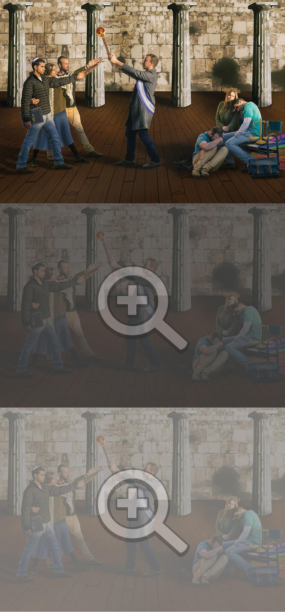
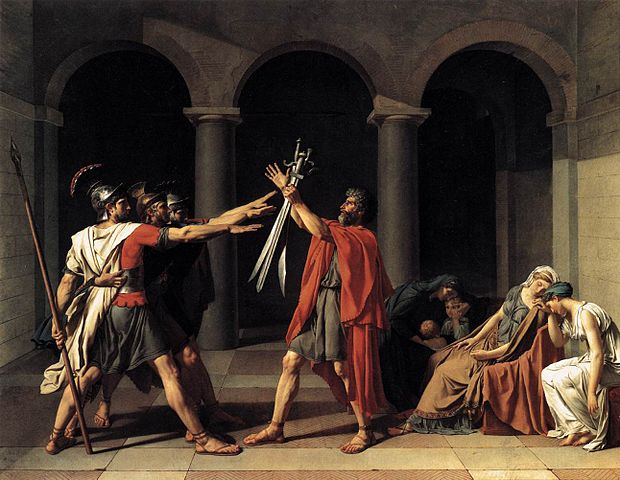

"שבועת האחים ההוראטים"
יוצרי העבודה: טל קליין, יהודר שוץ ועמרי כהנא
הסבר על היצירה
משבר הזהות בו מצויות הנשים ביצירה המקורית, נתן לנו את ההשראה לחפש קונפליקט דומה בחייו. בחרנו להתמקד במאבק הכוחות בין הצד הדמוקרטי בישראל לצד הדתי-יהודי.
ביצירתנו, הדמות המרכזית מייצגת את מדינת ישראל אשר מעניקה את שרביט הכוח לממסד הדתי, אותו מייצגות הדמויות משמאל. כמו בציור המקורי, הדמות המרכזית, שהיא מדינת ישראל, מסיתה את בניה ונותנת להם את הכח והלגיטימציה למלחמה. בצד הימני, מיוצג הפן הדמוקרטי של המדינה על ידי דמויות בוכות המבינות שהן יפסידו, בלי קשר לתוצאות ה"מלחמה".
בחרנו לייצג את שני הצדדים על ידי אותם אנשים, כשההבדל הוא בחזותם ובסמלים המייצגים אותם. הסיבה לכך היא שלא מדובר במלחמה בין שני כוחות זרים, אלא במאבק בין שתי זהויות של אותה המדינה.
וידאו המסביר על היצירה
הסבר על היצירה המקורית
היצירה מעבירה תחושת איפוק, אין בה הבעה חזקה של רגשות, לא נוצר קשר עין בין הדמויות והבכי של הנשים נראה עדין ורגוע. השימוש בצבעי היסוד גם תורת לתחושת המאופקת. האיפוק שנוצר ביצירה עומד בסתירה לסיפור שעומד מאחוריה, אודות אב השולח את בניו למלחמה כנגד משפחה אחרת, הנשים בתמונה קשורות לשתי המשפחות. לא משנה מי ינצח במלחמה, הן יאבדו בעל או אח. בעוד שהסיפור מדגיש את הנשים וסבלן, מבחינה ויזואלית ביצירה, הדגש דווקא על הגברים. יש תחושה של פרטריוטיזם בכל מחיר, ללא חשיבה על ההשלכות. פטריוטיזם בכל מחיר, ללא חשיבה על ההשלכות.